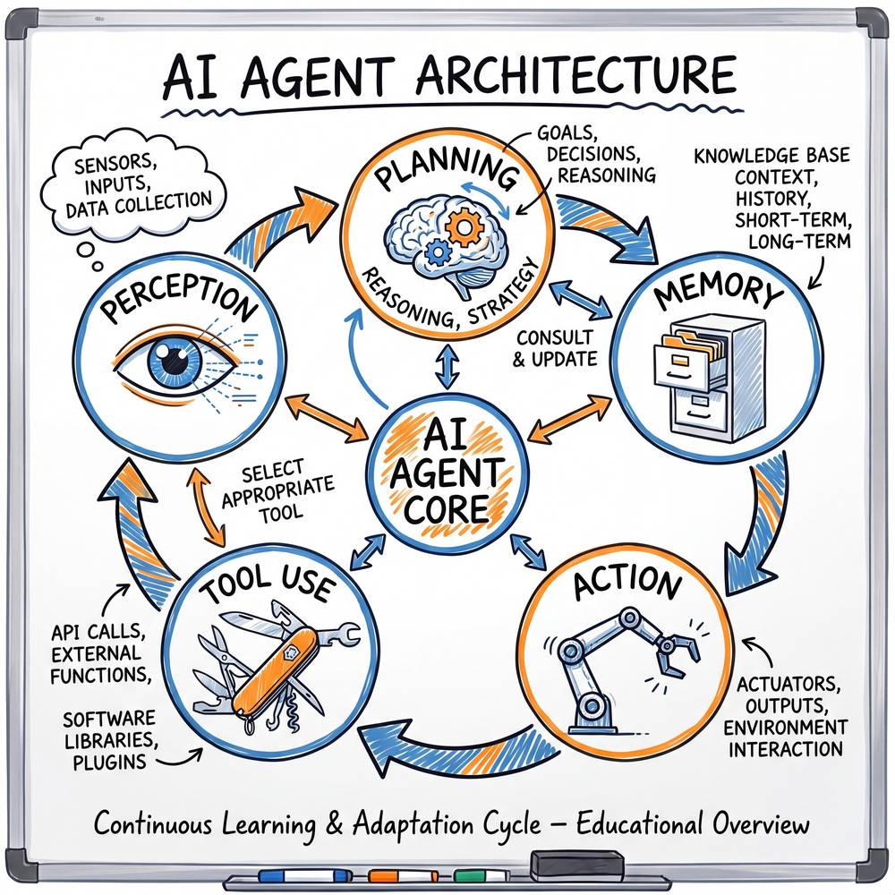
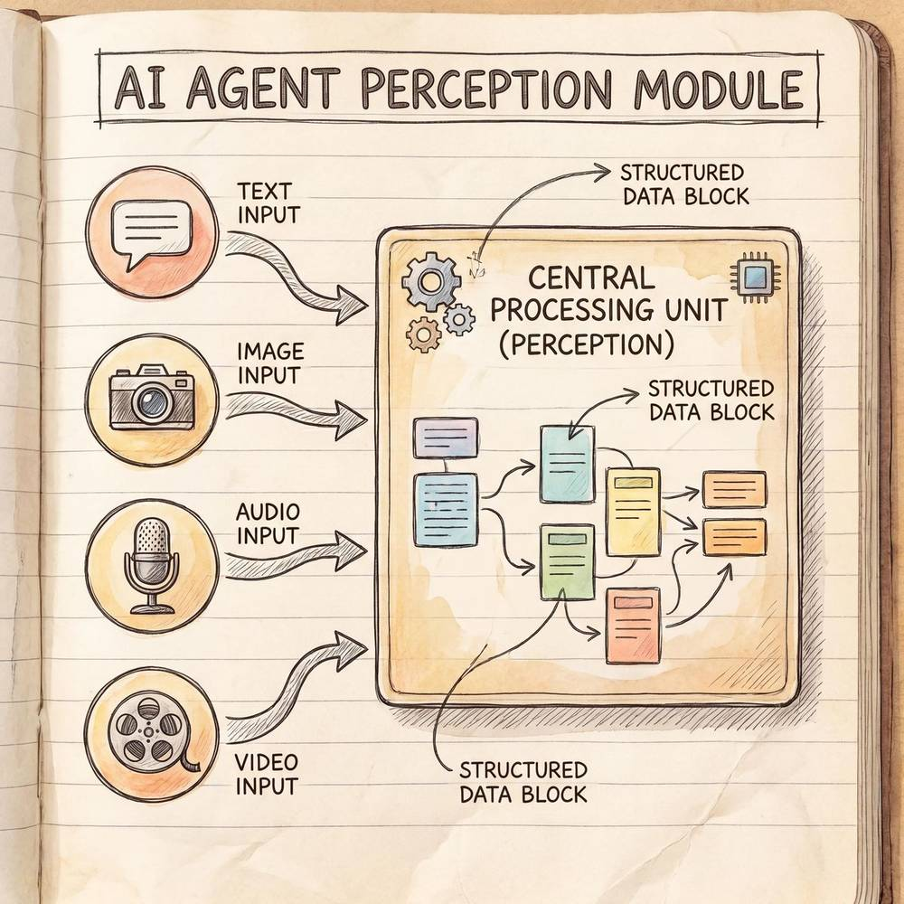
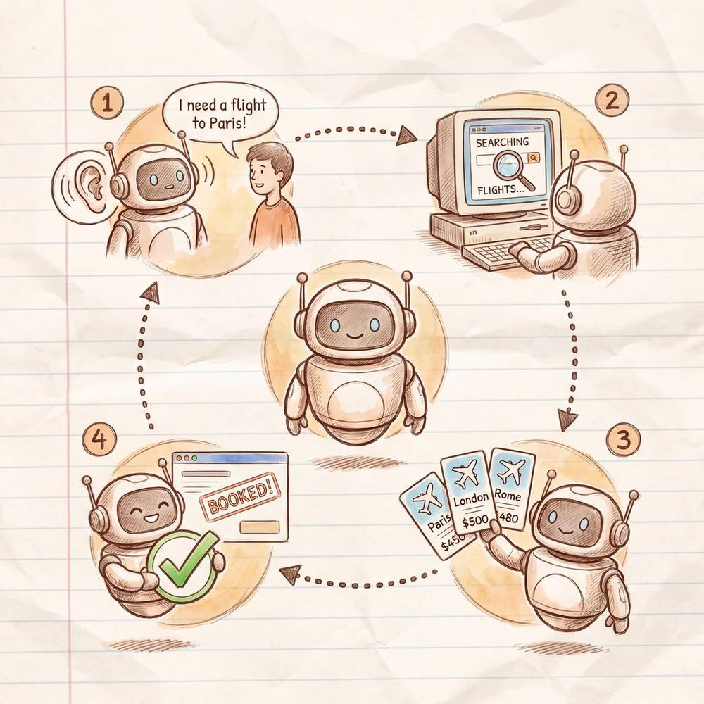

第二章：AI Agent 核心架构
"AI Agent 全面学习指南"系列 · 第二章
在上一章中，我们了解了 AI Agent 的基本概念与发展历程。本章将深入剖析 AI Agent 的核心架构——它不是一个单一的"大脑"，而是由多个紧密协作的模块组成的有机系统。理解这些模块的职责与交互方式，是掌握 AI Agent 设计与开发的基石。
2.1 AI Agent 架构总览
五大核心模块
一个功能完备的 AI Agent 通常由以下五大核心模块构成：
| 模块 | 英文名 | 核心职责 | 一句话概括 |
|---|---|---|---|
| 感知模块 | Perception | 接收和理解外部输入 | "看见世界" |
| 规划模块 | Planning | 分解任务、制定策略 | "想清楚怎么做" |
| 记忆模块 | Memory | 存储和检索历史信息 | "记住经验" |
| 行动模块 | Action | 执行具体操作、生成输出 | "动手去做" |
| 工具使用 | Tool Use | 调用外部工具扩展能力 | "借助工具" |
架构关系：一张"文字架构图"
想象一张流程图。最上方是外部环境（用户输入、网页、文件、API 返回结果等），它通过一条箭头连接到感知模块。感知模块负责将原始输入转化为 Agent 能够理解的结构化信息。
感知模块的输出流向两个方向：一方面进入记忆模块（将当前感知到的信息存入短期记忆），另一方面传递给规划模块。规划模块是整个 Agent 的"大脑中枢"，它综合当前感知信息与记忆模块中的历史经验，制定出一系列行动计划。
行动计划被传递给行动模块，行动模块负责执行具体操作。在执行过程中，行动模块往往需要借助工具使用模块来完成超出大语言模型自身能力范围的任务（如搜索互联网、执行代码、调用第三方 API）。
行动执行后，其结果（工具返回值、执行状态、环境变化等）又会被反馈回感知模块，形成一个闭环循环：
外部环境
↓
感知模块 ←——————————————————————┐
↓ │
记忆模块 ←→ 规划模块 │
↓ │
行动模块 → 工具使用 ─┘这个循环被称为 "感知—规划—行动"循环（Perception-Planning-Action Loop），也有人称之为 "观察—思考—行动"循环（Observe-Think-Act Loop）。它是所有 AI Agent 架构的基本范式。每一轮循环中，Agent 都会根据最新的环境信息和历史记忆做出决策，不断逼近目标。
与传统软件的本质区别
传统软件是确定性流程：输入 → 预编程的逻辑 → 输出。而 AI Agent 是自主决策系统：它能根据不同情况动态选择不同的行动路径，甚至在失败后自我纠错、重新规划。这种灵活性正是 Agent 架构的核心价值所在。

2.2 感知模块（Perception）
什么是感知？
感知模块是 Agent 与外部世界之间的桥梁。 它负责接收来自环境的各种信号，并将其转化为 Agent 内部能够处理的结构化表示。没有感知模块，Agent 就如同被关在黑屋子里——无论它的"大脑"多么聪明，也无法与世界交互。
类比：人的五感
我们可以用人的五感来理解感知模块的工作原理：
| 人的感官 | Agent 的对应能力 | 具体例子 |
|---|---|---|
| 视觉 | 图像理解、视频分析、屏幕截图识别 | 识别用户上传的产品照片 |
| 听觉 | 语音识别（ASR）、音频理解 | 将用户的语音指令转为文字 |
| 触觉 | 环境状态感知、传感器数据读取 | 机器人感知物体的温度与压力 |
| 嗅觉/味觉 | 数值型传感器信号（化学、环境） | 工业 Agent 监测空气质量数据 |
| 综合感知 | 多模态融合、上下文整合 | 同时理解用户的文字描述和附带的截图 |
正如人类不会孤立地使用某一种感官——你听到"小心！"的同时也会用眼睛去看发生了什么——Agent 的感知模块同样需要多模态融合能力。
四大感知能力详解
2.2.1 文本理解
这是当前 AI Agent 最基础也是最核心的感知能力。大语言模型（LLM）天然擅长理解自然语言文本。文本理解包括：

- 意图识别：用户说"帮我查一下明天北京的天气"，Agent 需要识别出意图是"查询天气"，而非"订机票"或"闲聊"。
- 实体抽取：从上述句子中提取出关键实体——时间："明天"，地点："北京"，查询类型："天气"。
- 情感分析：如果用户说"你们的服务太差了！"，Agent 需要感知到用户的不满情绪，从而调整应对策略。
- 指令解析：理解复杂指令的层级关系，如"先搜索最新的论文，然后总结前三篇的核心观点，最后生成一份 PPT"。
2.2.2 多模态感知
随着多模态大模型（如 GPT-4V、Claude 3 等）的发展，Agent 的感知能力已经远超纯文本范畴：
- 图像理解：识别图片中的物体、文字（OCR）、场景、人脸表情等。例如，用户上传一张餐厅菜单的照片，Agent 能将其中的菜品名称和价格提取出来。
- 音频理解：将语音转为文字（Speech-to-Text），并进一步理解语义。未来甚至可以直接从音频波形中提取情感、说话者身份等信息。
- 视频理解：理解视频中的动作序列、事件变化。例如安防场景下，Agent 需要从监控视频中检测异常行为。
2.2.3 环境感知
对于需要与真实或虚拟环境交互的 Agent（如机器人 Agent、游戏 Agent、操作系统 Agent），环境感知尤为重要：
- 屏幕状态感知：计算机操作 Agent 需要"看到"当前屏幕上显示的内容，包括窗口布局、按钮位置、文本内容等。
- 文件系统感知：编程 Agent 需要了解当前项目的目录结构、文件内容、依赖关系。
- API 响应感知：当 Agent 调用外部 API 后，需要解析返回的 JSON/XML 数据。
- 物理环境感知：对于具身智能（Embodied AI）Agent，需要感知物理世界的三维空间信息。
2.2.4 上下文整合
感知不是一次性的，而是持续累积的过程。上下文整合能力包括：
- 多轮对话上下文：记住用户在前几轮说过什么，理解代词指代（"它"指的是什么？"那个"是哪个？）。
- 跨模态上下文：将用户发送的文字描述与图片信息关联起来。例如用户说"图片中左边那个人是谁？"
- 任务上下文：在多步骤任务中，记住当前已经完成了哪些步骤，接下来应该做什么。
感知模块的质量直接决定了 Agent 对任务的理解深度。一个"听不清"指令的 Agent，后续的规划和行动都将南辕北辙。
2.3 规划模块（Planning）
什么是规划？
规划模块是 Agent 的"战略参谋部"。 它负责将用户的高层目标拆解为可执行的子任务序列，并在执行过程中根据反馈动态调整策略。
类比：装修房子需要先出设计方案再施工
想象你要装修一套新房子。你不会拿起锤子就开始砸墙——你需要先做以下事情：
- 需求分析：你想要什么风格？几间卧室？预算多少？（对应 Agent 理解用户目标）
- 出设计方案：设计师画出平面图、效果图、施工图（对应 Agent 制定行动计划）
- 排施工顺序：先拆改，再水电，然后瓦工、木工、油工，最后软装（对应 Agent 确定子任务的执行顺序）
- 应对突发情况：施工中发现墙体结构不对，需要调整方案（对应 Agent 的动态重规划能力）
如果没有规划就直接施工，后果可想而知——可能刷完墙才发现忘了埋电线。AI Agent 的规划模块就是为了避免这种"无头苍蝇"式的执行。
五大规划策略详解
2.3.1 任务分解（Task Decomposition）
这是规划模块最基本的能力。面对一个复杂任务，Agent 需要将其分解为多个可独立执行的子任务。例如：
用户目标："帮我写一份关于中国新能源汽车市场的研究报告"
分解结果：
- 搜索中国新能源汽车行业最新数据和政策
- 收集主要厂商（比亚迪、特斯拉中国、蔚来等）的市场份额数据
- 分析行业发展趋势
- 整理消费者偏好与购买动因
- 撰写报告初稿
- 添加图表和数据可视化
- 校对润色，生成最终版本
任务分解的质量直接决定了 Agent 的执行效率。好的分解应该满足 MECE 原则（Mutually Exclusive, Collectively Exhaustive）——子任务之间互不重叠，合在一起完整覆盖原始目标。
2.3.2 思维链（Chain-of-Thought, CoT）
思维链是一种让 Agent "边想边说" 的推理方式。不是直接给出答案，而是展示完整的推理过程。例如：
问题：一个书店周一卖了 35 本书，周二卖了周一的 2 倍，一周共卖了 300 本。其余五天平均每天卖了多少本？
思维链：
- 周一：35 本
- 周二：35 × 2 = 70 本
- 周一 + 周二合计：35 + 70 = 105 本
- 其余五天合计：300 - 105 = 195 本
- 平均每天：195 ÷ 5 = 39 本
思维链的价值在于：让 Agent 的推理过程显式化，减少跳步导致的逻辑错误，同时也让人类更容易理解和调试 Agent 的决策。
2.3.3 ReAct 框架（Reasoning + Acting）
ReAct 是当前 AI Agent 领域最具影响力的规划框架之一。它将推理（Reasoning）和行动（Acting）交替进行：
Thought: 用户想知道明天北京到上海的航班，我需要查询航班信息。
Action: 调用航班查询 API，参数为 {出发地: "北京", 目的地: "上海", 日期: "明天"}
Observation: API 返回了 15 个航班结果，最早的是 7:00 的 CA1501。
Thought: 我已经获得了航班信息，现在需要整理并呈现给用户。
Action: 将航班信息格式化为表格，按出发时间排序。
Observation: 表格已生成。
Thought: 任务完成，可以回复用户了。ReAct 的核心优势在于：每一步行动之前都有明确的推理过程，每一步行动之后都有对结果的观察与反思。这使得 Agent 的行为更加可控、可解释。
2.3.4 树搜索（Tree Search）
对于需要在多个可能方案中选择最优路径的场景，Agent 可以采用树搜索策略。经典方法包括：
- Tree of Thoughts（ToT）：将每个推理步骤视为树的一个节点，Agent 在多个分支中探索，评估每个分支的前景，选择最有希望的路径继续深入。
- 蒙特卡洛树搜索（MCTS）：通过模拟和回溯来评估各条路径的价值，在探索（尝试新路径）和利用（深入已知好路径）之间取得平衡。
树搜索特别适合那些决策空间大、答案不唯一的复杂规划任务，例如博弈类问题、路径优化、复杂数学证明等。
2.3.5 自我反思（Self-Reflection）
Agent 不仅要能执行，还要能反思和自我纠错。自我反思机制包括：
- 执行结果验证：行动完成后，检查结果是否符合预期。例如写完代码后运行测试，查看是否通过。
- 错误归因分析：如果结果不对，分析是哪一步出了问题——是感知理解有误？还是规划路径选错了？还是工具调用参数填错了？
- 策略调整：基于反思结论，调整后续的行动计划。可能是更换工具、修改参数、或者完全改变解题思路。
经典的自我反思框架包括 Reflexion 和 Self-Refine，它们让 Agent 在多轮迭代中不断改进自身的输出质量。
2.4 记忆模块（Memory）
什么是记忆？
记忆模块为 Agent 提供了"经验积累"的能力。 没有记忆的 Agent 每次都从零开始，无法利用过去的经验，也无法在长对话中保持连贯性。记忆是 Agent 从"一次性工具"进化为"持续性助手"的关键。
类比：人的工作台 vs 书架
我们可以用工作台和书架来理解 Agent 的两种记忆：
| 特性 | 短期记忆（工作台） | 长期记忆（书架） |
|---|---|---|
| 容量 | 有限（工作台面积有限） | 几乎无限（书架可以不断扩展） |
| 存取速度 | 极快（伸手就能拿到） | 较慢（需要查找对应的书） |
| 保持时间 | 临时（任务结束就清理） | 持久（长期保存） |
| 内容类型 | 当前任务相关信息 | 历史经验、知识、用户偏好 |
| 对应技术 | 上下文窗口（Context Window） | 向量数据库、知识图谱、文件存储 |
想象你正在写一篇论文：工作台上摊开的是你正在引用的几篇论文、你的写作提纲、以及当前正在编辑的段落——这些是你"随时需要看到"的信息。而书架上存放的是你过去读过的所有书籍和论文——你不会把它们全部摊在桌上，但需要的时候你知道去哪里找。
短期记忆（Short-term Memory）
短期记忆主要指 Agent 在单次任务会话中保持的上下文信息。在技术实现上，它通常对应于 LLM 的上下文窗口（Context Window）。
核心特点：
- 即时可用：所有存储在短期记忆中的信息都可以被 Agent 直接"看到"，无需额外检索。
- 容量有限：即使是最先进的模型，上下文窗口也有上限（如 128K、200K tokens）。当对话过长时，早期信息会被"遗忘"（截断或压缩）。
- 任务相关：短期记忆中通常只保留与当前任务直接相关的信息。
短期记忆的管理策略：
- 滑动窗口：当上下文超出限制时，删除最早的消息。简单但可能丢失重要信息。
- 摘要压缩：将较早的对话内容生成摘要，用摘要替代原文，节省 token 同时保留关键信息。
- 关键信息提取：只保留历史对话中的关键实体、决策和结论，丢弃冗余的过程信息。
长期记忆（Long-term Memory）
长期记忆使 Agent 能够跨会话保持信息，积累经验，并随着使用时间的增长变得"越来越了解用户"。
长期记忆的类型：
| 类型 | 描述 | 例子 |
|---|---|---|
| 情景记忆 | 记住具体的事件经历 | "上次用户让我查航班时，偏好选早班机" |
| 语义记忆 | 记住通用知识和事实 | "北京到上海的高铁约 4.5 小时" |
| 程序记忆 | 记住如何完成某类任务的步骤 | "查航班的标准流程：确认日期 → 调用 API → 排序 → 展示" |
技术实现：
- 向量数据库（Vector Database）：将信息编码为高维向量，通过向量相似度检索最相关的记忆片段。常用工具包括 Pinecone、Weaviate、Chroma 等。这是当前最主流的长期记忆方案。
- 知识图谱（Knowledge Graph）：以"实体—关系—实体"的三元组形式存储结构化知识，适合需要精确关系推理的场景。
- 关系型数据库 / 文件系统：存储结构化数据或原始文件，适合需要精确查找的场景。
记忆的检索与更新
记忆存进去只是第一步，关键在于能在需要的时候高效检索出来。常见的检索策略包括：
- 语义检索：通过 Embedding 向量的相似度匹配，找到与当前查询语义最接近的记忆片段。
- 时间衰减：最近的记忆权重更高，很久以前的记忆权重递减。模拟人类"近因效应"。
- 重要性加权：标记为"重要"的记忆（如用户的明确偏好声明）会被优先检索。
- 混合检索：结合关键词匹配、语义匹配、时间因子等多维信号进行综合排序。
2.5 行动模块（Action）
什么是行动？
行动模块是 Agent 将"想法"转化为"现实"的执行层。 如果说规划模块是"指挥部"，那么行动模块就是"作战部队"。它接收规划模块的指令，执行具体操作，并将结果反馈回系统。
类比：厨师做菜
一位优秀的厨师，不仅需要知道菜谱（规划），还需要精湛的烹饪技艺（行动能力）。Agent 的行动模块就像厨师在厨房里的各项操作：
| 厨师的操作 | Agent 的行动类型 | 具体说明 |
|---|---|---|
| 切菜、搅拌 | 文本生成 | 最基础的"烹饪动作"，就像厨师的刀工 |
| 使用烤箱、微波炉 | 工具调用 | 借助专业设备完成特定步骤 |
| 调整火候、控制时间 | 参数控制 | 精确控制工具的调用参数 |
| 尝味道、调整调料 | 结果验证与修正 | 检查输出质量，必要时调整 |
| 摆盘上菜 | 格式化输出 | 将结果以用户期望的格式呈现 |
一道好菜，需要切、炒、调味、摆盘等多种技艺的配合；同样，Agent 完成一个任务，往往也需要多种行动类型的组合。
四大行动类型详解
2.5.1 文本生成
这是 LLM 最原生的行动能力。包括：
- 直接回答：回答用户的问题，如解释概念、提供建议。
- 内容创作：撰写文章、邮件、代码注释、营销文案等。
- 摘要与翻译：将长文本压缩为摘要，或翻译为其他语言。
- 格式转换：将非结构化文本转为 JSON、表格、Markdown 等格式。
文本生成虽然"简单"，但它是所有其他行动类型的基础——即使是工具调用，Agent 也需要先"生成"正确的调用指令。
2.5.2 工具调用
当 Agent 需要获取实时信息、执行精确计算或与外部系统交互时，它会调用外部工具。工具调用的过程通常是：
- 决策：规划模块决定需要调用哪个工具。
- 参数生成：Agent 生成工具调用所需的参数（通常以 JSON 格式）。
- 执行调用：系统将参数传递给对应的工具并执行。
- 结果解析：Agent 接收工具返回的结果，并将其整合到后续的推理中。
{
"tool": "weather_api",
"parameters": {
"city": "北京",
"date": "2026-04-19"
}
}2.5.3 代码执行
对于需要数据分析、数学计算、文件处理等任务，Agent 可以编写并执行代码：
- 数据分析：使用 Python 对数据集进行统计分析、可视化。
- 数学计算：精确计算复杂数学表达式（LLM 本身的数学能力有限）。
- 文件操作：读写文件、格式转换（如 CSV 转 Excel）。
- 自动化脚本：执行批量操作，如批量重命名文件、批量发送邮件。
代码执行通常在沙箱环境中进行，以确保安全性。
2.5.4 系统操作
高级 Agent（如 Computer Use Agent）可以直接操作计算机系统：
- 鼠标点击与键盘输入：模拟人类操作图形界面。
- 浏览器自动化：打开网页、填写表单、点击按钮、提取信息。
- 应用程序控制：启动、切换、关闭应用程序。
- 终端命令执行：在命令行中执行系统命令。
这类操作使 Agent 能够完成几乎所有人类在电脑上能做的事情，但同时也带来了更大的安全挑战。
行动质量的保障机制
为了确保行动输出的质量，优秀的 Agent 系统通常会内置以下机制：
- 输出验证：检查生成的文本是否满足格式要求，调用的 API 参数是否合法。
- 重试机制：工具调用失败时自动重试（通常带有指数退避策略）。
- 降级策略：首选方案不可用时，自动切换到备选方案。例如某个 API 不可用时，尝试通过网页搜索获取相同信息。
- 安全护栏：防止 Agent 执行危险操作，如删除系统文件、发送未经确认的付款等。
2.6 工具使用（Tool Use）
什么是工具使用？
工具使用模块赋予了 Agent 超越 LLM 自身能力的"超能力"。 大语言模型虽然强大，但它有天然的局限性：不能访问实时信息、数学计算不够精确、无法直接与外部系统交互。工具使用模块正是为了弥补这些短板。
类比：瑞士军刀
Agent 的工具箱就像一把瑞士军刀——一把刀上集成了多种功能：
- 主刀片（搜索引擎）：最常用的工具，帮你"切开"信息壁垒。
- 螺丝刀（代码解释器）：当你需要精确"拧紧"数字计算时，它不可或缺。
- 开瓶器（API 调用）：帮你"打开"各种第三方服务的大门。
- 小剪刀（浏览器）：在网页世界中精准地"裁剪"所需信息。
- 镊子（数据库查询）：从海量数据中精确地"夹取"目标记录。
瑞士军刀的精髓不在于每一种工具都是最强的，而在于它们的组合使用能够应对绝大多数场景。 Agent 的工具箱同理。
五大核心工具详解
2.6.1 搜索引擎
这是 Agent 最常用的外部工具之一，使 Agent 能够访问互联网上的最新信息。
典型应用场景：
- 查询实时新闻、天气、股价
- 搜索技术文档和论文
- 查找商品信息、用户评价
- 验证事实性陈述的准确性
技术要点：
- Agent 需要学会构造有效的搜索查询（不是直接把用户的问题扔给搜索引擎）
- 需要能够从搜索结果中筛选和提取关键信息
- 多次搜索、逐步精炼是常见策略
2.6.2 代码解释器
代码解释器（通常是 Python 运行环境）让 Agent 拥有了精确计算和数据处理的能力。
典型应用场景：
- 复杂数学计算和统计分析
- 数据可视化（生成图表）
- 文件格式转换
- 文本处理与正则匹配
关键优势：LLM 的自然语言计算容易出错（如大数乘法），而代码执行的结果是确定性的。Agent 学会"遇到计算就写代码"是一个重要的能力进化。
2.6.3 API 调用
API（应用程序接口）让 Agent 能够与各种第三方服务交互。
常见 API 类型：
- 信息查询类：天气 API、航班查询 API、汇率 API
- 操作执行类：发送邮件 API、日历创建 API、支付 API
- AI 服务类：图像生成 API、语音合成 API、翻译 API
- 企业内部 API：CRM 系统、ERP 系统、内部知识库
挑战：Agent 需要理解 API 的文档（参数格式、认证方式、错误码含义），并能正确构造请求。这对 Agent 的"工具学习能力"提出了较高要求。
2.6.4 浏览器
浏览器工具让 Agent 能够像人类一样浏览网页。
典型应用场景：
- 访问需要登录才能查看的内容
- 填写在线表单
- 从动态网页中抓取信息（搜索引擎无法索引的内容）
- 完成在线操作（如预订、购买）
技术实现：通常基于 Puppeteer、Playwright 或 Selenium 等浏览器自动化框架，Agent 可以执行点击、输入、滚动、截图等操作。
2.6.5 数据库
数据库工具让 Agent 能够查询和操作结构化数据。
典型应用场景：
- 查询企业内部的客户信息、订单数据
- 执行统计分析（如"本月销售额最高的前 10 个产品"）
- 数据的增删改查操作
技术实现：Agent 通常会生成 SQL 查询语句，由系统执行后将结果返回给 Agent。这要求 Agent 具备一定的 SQL 编写能力（现代 LLM 在这方面表现出色）。
工具使用的核心挑战
| 挑战 | 描述 | 解决方案 |
|---|---|---|
| 工具选择 | 面对众多工具，如何选择最合适的那个？ | 工具描述优化、Few-shot 示例、工具推荐系统 |
| 参数填充 | 如何正确填充工具的调用参数？ | 参数 Schema 约束、参数验证、默认值处理 |
| 错误处理 | 工具调用失败怎么办？ | 重试机制、降级策略、错误码映射 |
| 权限控制 | 如何防止 Agent 滥用工具？ | 权限分级、用户确认机制、操作审计 |
| 工具发现 | 如何让 Agent 知道有哪些工具可用？ | 动态工具注册、工具市场（Tool Marketplace） |
2.7 模块协作：完整的执行循环演示
真实场景："帮我订明天北京到上海的机票"
让我们用一个具体的场景来串联五大模块的协作过程。假设用户对 Agent 说：

"帮我订明天北京到上海的机票，最好是上午出发，经济舱。"
以下是 Agent 内部的完整执行循环：
第一轮循环：理解需求
🔵 感知模块启动
感知模块接收到用户的自然语言输入，进行以下处理：
- 意图识别：用户意图 = "预订机票"
- 实体抽取：
- 出发地：北京
- 目的地：上海
- 日期：明天（即 2026-04-19）
- 时间偏好：上午出发
- 舱位：经济舱
- 隐含需求分析：用户没有指定具体航空公司和出发机场（北京有首都和大兴两个机场），需要后续确认或默认处理
🟡 记忆模块参与
Agent 查询长期记忆，发现：
- 该用户上次订机票时选择了大兴机场
- 该用户是国航常旅客会员
- 该用户偏好靠窗座位
这些历史偏好会被纳入后续决策。
🔴 规划模块制定计划
规划模块综合感知结果和记忆信息，制定以下行动计划：
计划：
1. 调用航班查询 API，搜索 2026-04-19 北京→上海的上午航班
2. 筛选经济舱可用航班，优先显示国航航班（基于用户偏好）
3. 将结果整理为表格呈现给用户
4. 等待用户选择具体航班
5. 确认订单信息后执行预订第二轮循环：搜索航班
🛠️ 工具使用模块 + 行动模块执行
Agent 调用航班查询 API：
{
"tool": "flight_search_api",
"parameters": {
"departure": "PEK,PKX",
"arrival": "SHA,PVG",
"date": "2026-04-19",
"time_range": "06:00-12:00",
"cabin_class": "economy"
}
}🔵 感知模块解析返回结果
API 返回 12 个航班结果。感知模块解析 JSON 数据，提取关键字段：航班号、航空公司、出发时间、到达时间、价格、余票数量。
🟡 记忆模块更新
将本次搜索结果存入短期记忆，供后续对话使用。
🔴 规划模块动态调整
发现国航有 3 个航班符合条件（CA1501 07:00、CA1515 09:30、CA1521 11:00），决定优先推荐这 3 个，同时展示其他航空公司的选项供参考。
第三轮循环：呈现结果
🛠️ 行动模块输出
Agent 将结果格式化为以下表格呈现给用户：
| 推荐排序 | 航班号 | 航空公司 | 出发 | 到达 | 出发机场 | 价格 | 余票 |
|---|---|---|---|---|---|---|---|
| ⭐ 1 | CA1515 | 中国国航 | 09:30 | 11:45 | 大兴 T1 | ¥980 | 23 |
| ⭐ 2 | CA1501 | 中国国航 | 07:00 | 09:15 | 大兴 T1 | ¥890 | 15 |
| 3 | MU5101 | 东方航空 | 08:15 | 10:30 | 大兴 T2 | ¥920 | 31 |
| 4 | CA1521 | 中国国航 | 11:00 | 13:15 | 大兴 T1 | ¥1050 | 8 |
| ... | ... | ... | ... | ... | ... | ... | ... |
💡 根据您的偏好（大兴机场出发、国航常旅客），为您优先推荐了以上航班。CA1515 的时间和价格综合最优。请问您想选择哪一个航班？
第四轮循环：确认与预订
🔵 感知模块 接收到用户回复："就第一个吧。"
🔵 感知模块 解析指代关系：推荐排序第 1 → CA1515。
🔴 规划模块 制定预订执行计划：
- 确认订单详情（含用户姓名、证件信息——从长期记忆中获取）
- 向用户展示最终确认信息
- 获得确认后调用预订 API
🛠️ 行动模块 输出确认信息：
请确认以下订单信息：
- 航班：CA1515（中国国航）
- 日期：2026 年 4 月 19 日
- 北京大兴 09:30 → 上海虹桥 11:45
- 经济舱，¥980
- 乘客：张三（身份证 110xxx）
- 座位偏好：靠窗
确认预订吗？
用户回复："确认。"
🛠️ 工具使用模块 调用预订 API 完成下单，返回订单号。
🟡 记忆模块 将本次预订经历存入长期记忆，包括用户选择了 CA1515、价格 ¥980 等信息，为未来的推荐提供数据支撑。
执行循环总结
通过这个完整的真实场景，我们可以清晰地看到五大模块是如何协作的：
用户: "帮我订明天北京到上海的机票..."
│
▼
┌──────────┐ 理解意图、提取实体
│ 感知模块 │──────────────────────────┐
└──────────┘ │
│ ▼
│ ┌──────────┐
│ │ 记忆模块 │ 回忆用户偏好
│ └──────────┘
▼ │
┌──────────┐ 制定搜索、筛选、推荐方案 │
│ 规划模块 │◄────────────────────────┘
└──────────┘
│
▼
┌──────────┐ 调用航班 API、格式化输出
│ 行动模块 │
└──────────┘
│
▼
┌──────────┐ 航班查询 API、预订 API
│ 工具使用 │
└──────────┘
│
▼
[返回结果 → 感知模块 → 下一轮循环...]每一轮循环都遵循相同的模式：感知 → 记忆检索 → 规划 → 行动（含工具使用）→ 结果反馈 → 新一轮感知。 这就是 AI Agent 核心架构的运行本质。
本章小结
| 模块 | 核心职责 | 关键技术 | 类比 |
|---|---|---|---|
| 感知 | 理解输入，感知环境 | NLU、多模态模型、OCR、ASR | 人的五感 |
| 规划 | 任务分解，策略制定 | CoT、ReAct、ToT、Reflexion | 装修设计方案 |
| 记忆 | 信息存储，经验积累 | 上下文窗口、向量数据库、知识图谱 | 工作台 + 书架 |
| 行动 | 执行操作，生成输出 | 文本生成、代码执行、系统操作 | 厨师做菜 |
| 工具使用 | 调用外部工具扩展能力 | API、搜索引擎、代码解释器、浏览器 | 瑞士军刀 |
核心要点：
- 五大模块缺一不可：感知是入口，规划是大脑，记忆是经验，行动是双手，工具是延伸。
- 闭环循环是灵魂："感知—规划—行动"的循环使 Agent 能够持续感知环境变化并动态调整行为。
- 模块质量决定上限：每个模块的能力上限共同决定了 Agent 整体的表现上限——木桶效应在此同样适用。
- 协作大于单打独斗：真正强大的 Agent 不是某个模块特别突出，而是所有模块协作流畅。
下一章预告：在第三章中，我们将深入探讨 AI Agent 的核心引擎——大语言模型（LLM），了解 LLM 是如何驱动 Agent 的各个模块运转的，以及如何选择和优化 LLM 以获得最佳的 Agent 表现。
💡 觉得有帮助？欢迎关注我们
获取更多 AI Agent 学习资料与行业动态
 微信公众号
微信公众号
 小红书
小红书